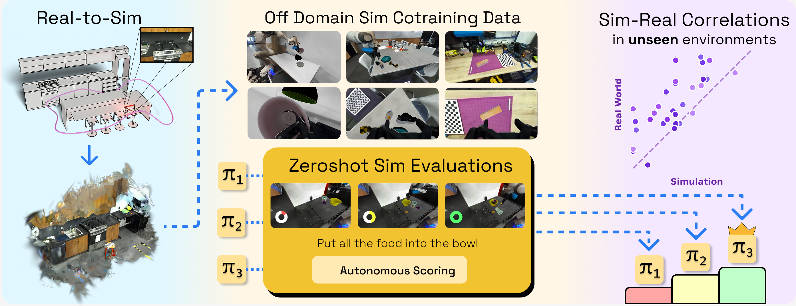
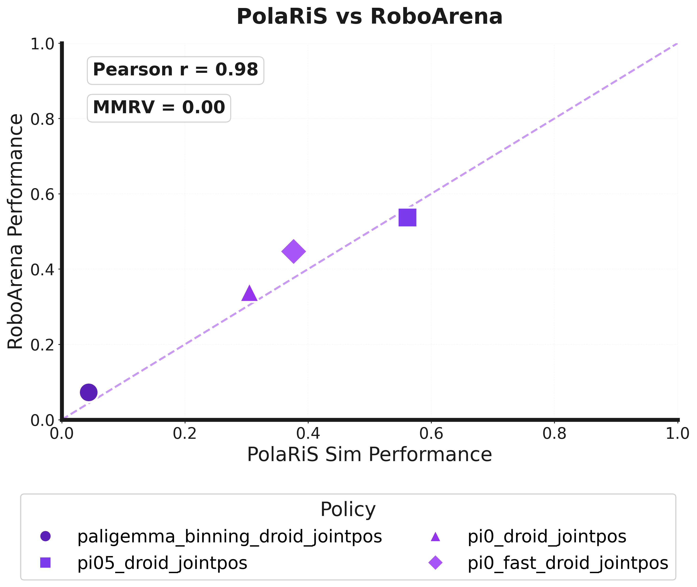

PolaRiS is a real-to-sim approach for constructing high-fidelity simulated environments for scalable evaluation. PolaRiS’s 3D Gaussian splatting–based framework quickly turns a short video of a real-world scene into a simulation environment. We use PolaRiS to create a diverse suite of simulated environments and demonstrate strong correlations to real-world evaluations for generalist robot policies.
A 2–5 minute camera scan captures geometry and appearance. ChArUco for metric scale; minimal user effort.
2D Gaussian Splatting (2DGS) recovers photorealistic visuals. We extract meshes for collision and contact-aware simulation.
Robots are articulated with kinematics-aware splats. Objects are generated from multiview images (TRELLIS) and made physics-ready.
Explore Gaussian Splat reconstructions and TRELLIS-generated object meshes side by side.
All performance metrics are based on normalized task progress scores, with 20 rollouts in real and 50 rollouts in sim per policy-task pair.
PolaRiS evaluations correlate strongly with real-world performance. See comparison rollouts below for PolaRiS and Ctrl-World.
RoboArena Correlation
PolaRiS evaluation scores also correlate with policy scores from RoboArena.
This validates that PolaRiS rankings also align with real-world human judgments of policy progress and quality.

Sample rollouts for the same policies and environments.
Including simulation data in co-training improves correlation.
Diverse simulated rollouts for visual alignment.
Compose Environments
An interactive tool for composing and configuring PolaRiS simulation environments from reconstructed scenes.
Launch ToolPolaRiS Hub
Download our evaluation environments or contribute your own. See the contribution guide for more details.
Hugging Face@misc{jain2025polarisscalablerealtosimevaluations,
title={PolaRiS: Scalable Real-to-Sim Evaluations for Generalist Robot Policies},
author={Arhan Jain and Mingtong Zhang and Kanav Arora and William Chen and Marcel Torne and Muhammad Zubair Irshad and Sergey Zakharov and Yue Wang and Sergey Levine and Chelsea Finn and Wei-Chiu Ma and Dhruv Shah and Abhishek Gupta and Karl Pertsch},
year={2025},
eprint={2512.16881},
archivePrefix={arXiv},
primaryClass={cs.RO},
url={https://arxiv.org/abs/2512.16881},
}